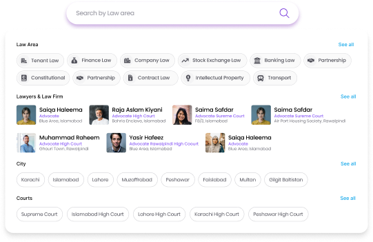
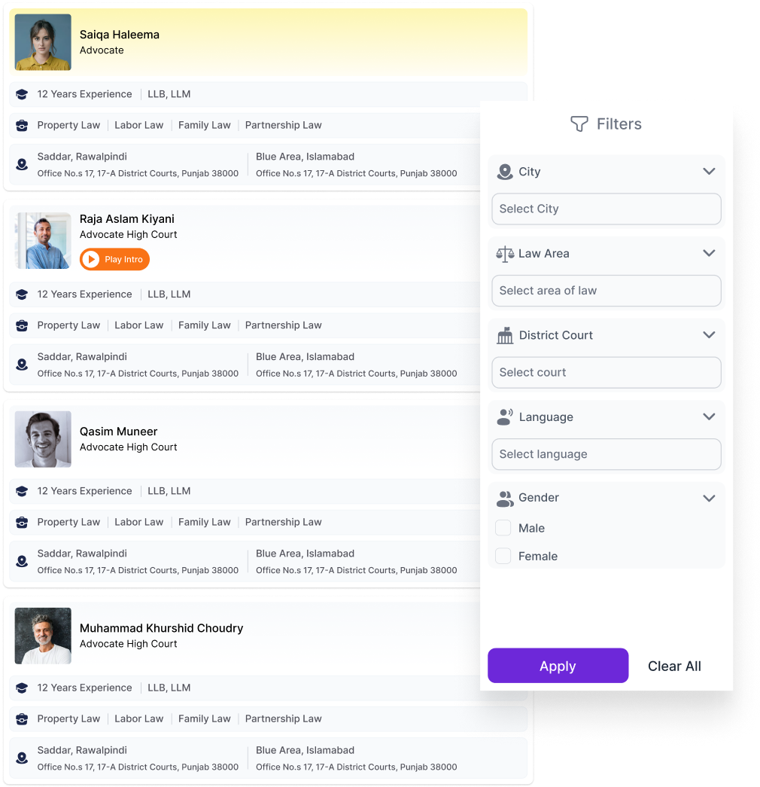
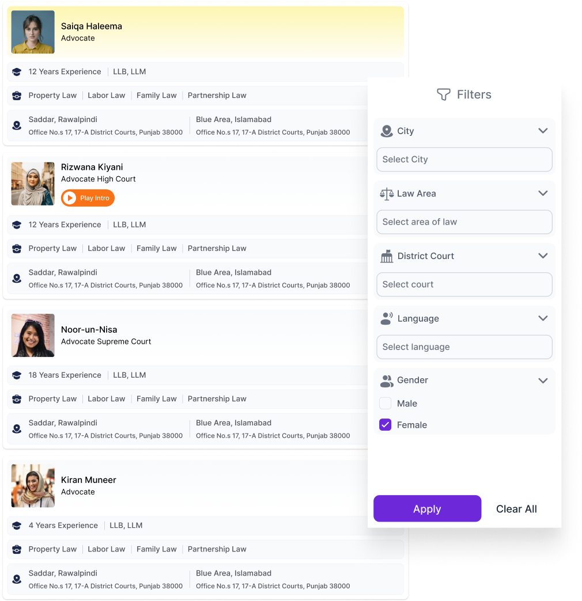
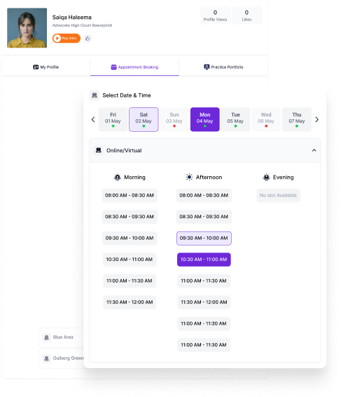
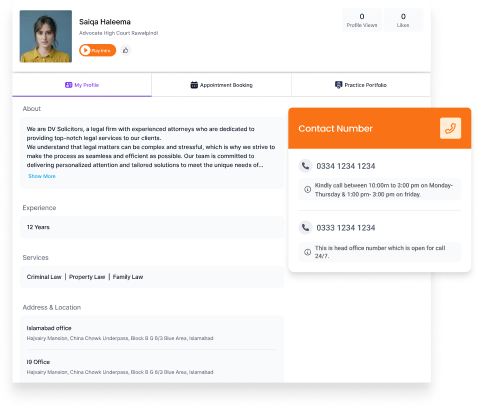

Find a Laywer
Anytime, Anywhere
wooqlaw® connects you to lawyers based on your search criteria from anywhere, at anytime
to
help you find the best solution to your legal issue.
How it works for Clients?
1.
To get started:
Click within the search box to begin, select one of the listed filters or type a keyword like city or legal practice area to find the intended filter.


2.
Filter listings according to your needs:
You shall now see a list of lawyers derived from the first filter. You can use our detailed search filters to further narrow down the list according to your requirements.
3.
Are you looking for a female lawyer to help you with your legal issue?
Click within the search box and select the legal practice area, then use the “Gender” search filter on the lawyer listing screen to locate a female lawyer. Select city, court, languages and other search criteria to further narrow down lawyer profiles


4.
Are you looking for a female lawyer to help you with your legal issue?
Click within the search box and select the legal practice area, then use the “Gender” search filter on the lawyer listing screen to locate a female lawyer. Select city, court, languages and other search criteria to further narrow down lawyer profiles
5.

Need a fixed consultation time?
After you have opted for the most suitable lawyer and would like to set up an appointment to discuss your case remotely or in-person; either Select 'Next Available Appointment' or click on the 'Book Appointment' section in the profile to select a date and time that works for you.